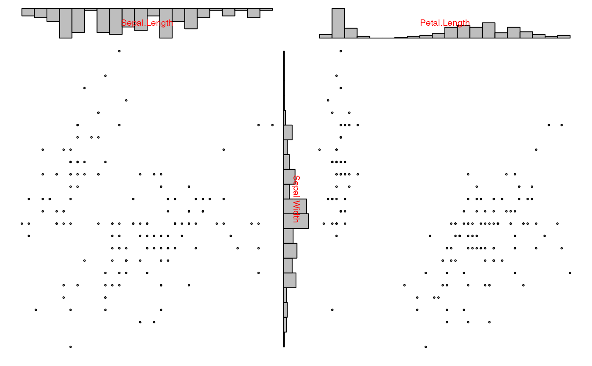

Extracting information for our default/provided plot1d()
extract_1d(zargs)A list list with
x:the data to be plotted in the 1d plot
xcols:a list with all columns of x
groups:the group numbers for each column of x
vars:the variable numbers for each column of x
glabs:the group labels for each column of x
vlabs:the variable labels for each column of x
horizontal:a logical indicating
whether the plot is horizontal or vertical, and
xlim:the axis limits.
This is an auxiliary function called on zargs within any
1d plotting function (e.g. hist_1d_grid,
density_1d_graphics, or points_1d_loon)
to extract the 1d data from zargs needed for plotting.
For performance reasons, no checking of the input object is done.
Performance critical
Other tools for constructing your own plot1d and plot2d functions:
burst_aux(),
burst(),
check_zargs(),
extract_2d(),
plot_indices()
Other data extraction functions to build plots:
extract_2d()
Other default 1d plot functions:
arrow_1d_graphics(),
arrow_1d_grid(),
arrow_1d_loon(),
boxplot_1d_graphics(),
boxplot_1d_grid(),
boxplot_1d_loon(),
density_1d_graphics(),
density_1d_grid(),
density_1d_loon(),
hist_1d_graphics(),
hist_1d_grid(),
hist_1d_loon(),
jitter_1d_graphics(),
jitter_1d_grid(),
jitter_1d_loon(),
label_1d_graphics(),
label_1d_grid(),
label_1d_loon(),
lines_1d_graphics(),
lines_1d_grid(),
lines_1d_loon(),
points_1d_graphics(),
points_1d_grid(),
points_1d_loon(),
rect_1d_graphics(),
rect_1d_grid(),
rect_1d_loon(),
rug_1d_graphics(),
rug_1d_grid(),
rug_1d_loon()
## This function is used within the default (any user defined)
## 1d plots
my_1d_plot <- function(zargs, your_name = "Bob", ...) {
data_1d <- extract_1d(zargs)
msg <- paste("Components of zargs available",
"to construct a 1d plot for ",
your_name)
print(msg)
## just print the names of the data components
## which you might want to use in your plot
print(names(data_1d))
## You might have to draw your 1d plot differently depending
## upon whether it is to appear horizontally or vertically
if (data_1d$horizontal) {
print("This plot would be horizontal")
} else {
print("This one would be vertical")
}
## You can plot whatever you want using the information in
## could use any of these to construct any 1d plot you want
## using R's graphics or any of zemplot's built in 1d plots.
##
## For example, here we use zenplot's base graphics functions
## First a histogram
hist_1d_graphics(zargs, ...)
## to which we add the variable label
label_1d_graphics(zargs, add = TRUE, col = "red", ...)
## similar functions could be called for the other packages.
## You can print the source of anyone of the default functions
## to get some idea of managing details.
}
## And now try it out
zenplot(iris[,1:3], plot1d = my_1d_plot)
#> [1] "Components of zargs available to construct a 1d plot for Bob"
#> [1] "x" "xcols" "groups" "vars" "glabs"
#> [6] "vlabs" "horizontal" "xlim"
#> [1] "This plot would be horizontal"
#> [1] "Components of zargs available to construct a 1d plot for Bob"
#> [1] "x" "xcols" "groups" "vars" "glabs"
#> [6] "vlabs" "horizontal" "xlim"
#> [1] "This one would be vertical"
#> [1] "Components of zargs available to construct a 1d plot for Bob"
#> [1] "x" "xcols" "groups" "vars" "glabs"
#> [6] "vlabs" "horizontal" "xlim"
#> [1] "This plot would be horizontal"
